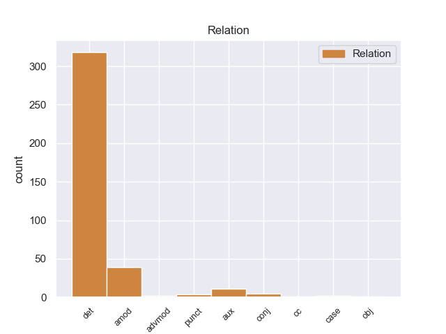
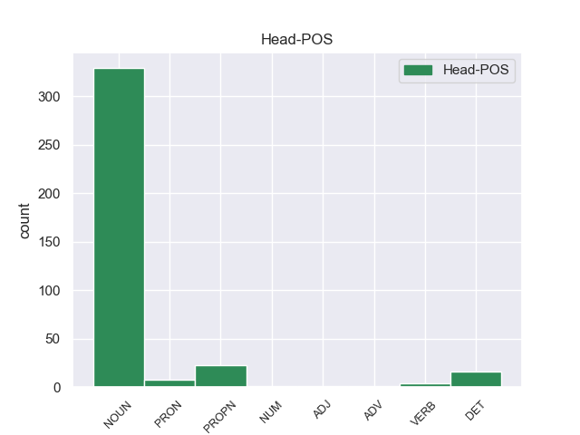
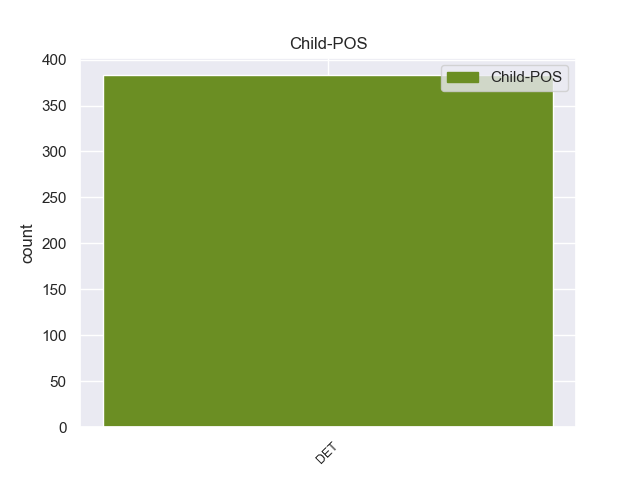

Distribution of features within this leaf



Agreement Rules sorted by frequency.
- When the dependent token is the determiner(det) of the head token, and the dependent token is DET.
1 Ο _ _ _ _ 0 _ _ _
2 δημοσιογράφος _ _ _ _ 0 _ _ _
3 , _ _ _ _ 0 _ _ _
4 ο _ _ _ _ 0 _ _ _
5 οποίος _ _ _ _ 0 _ _ _
6 έγραφε έγραφε DET _ Case=Acc|Gender=Fem|Number=Sing 13 det _ _
7 τις _ _ _ _ 0 _ _ _
8 ομιλίες _ _ _ _ 0 _ _ _
9 του _ _ _ _ 0 _ _ _
10 Χάουμε _ _ _ _ 0 _ _ _
11 Μάτας _ _ _ _ 0 _ _ _
12 και _ _ _ _ 0 _ _ _
13 έπλεκε έπλεκε DET _ Case=Acc|Gender=Fem|Number=Sing 0 _ _ _
14 το _ _ _ _ 0 _ _ _
15 εγκώμιο _ _ _ _ 0 _ _ _
16 του _ _ _ _ 0 _ _ _
17 τελευταίου _ _ _ _ 0 _ _ _
18 , _ _ _ _ 0 _ _ _
19 καταδικάστηκε _ _ _ _ 0 _ _ _
20 σε _ _ _ _ 0 _ _ _
21 κάθειρξη _ _ _ _ 0 _ _ _
22 τριών _ _ _ _ 0 _ _ _
23 ετών _ _ _ _ 0 _ _ _
24 και _ _ _ _ 0 _ _ _
25 εννέα _ _ _ _ 0 _ _ _
26 μηνών _ _ _ _ 0 _ _ _
27 . _ _ _ _ 0 _ _ _
1 πρόκειται _ _ _ _ 0 _ _ _
2 για _ _ _ _ 0 _ _ _
3 αυτό _ _ _ _ 0 _ _ _
4 το _ _ _ _ 0 _ _ _
5 οποίο _ _ _ _ 0 _ _ _
6 αποκαλύφθηκε _ _ _ _ 0 _ _ _
7 κατά _ _ _ _ 0 _ _ _
8 τη _ _ _ _ 0 _ _ _
9 διάρκεια _ _ _ _ 0 _ _ _
10 αυτής _ _ _ _ 0 _ _ _
11 της _ _ _ _ 0 _ _ _
12 διαδικασίας _ _ _ _ 0 _ _ _
13 , _ _ _ _ 0 _ _ _
14 ότι _ _ _ _ 0 _ _ _
15 ο _ _ _ _ 0 _ _ _
16 Εισαγγελέας _ _ _ _ 0 _ _ _
17 κάποια _ _ _ _ 0 _ _ _
18 στιγμή _ _ _ _ 0 _ _ _
19 ζήτησε _ _ _ _ 0 _ _ _
20 από _ _ _ _ 0 _ _ _
21 την _ _ _ _ 0 _ _ _
22 Πρόεδρο _ _ _ _ 0 _ _ _
23 του _ _ _ _ 0 _ _ _
24 Σώματος _ _ _ _ 0 _ _ _
25 , _ _ _ _ 0 _ _ _
26 την _ _ _ _ 0 _ _ _
27 προκάτοχό _ _ _ _ 0 _ _ _
28 σας _ _ _ _ 0 _ _ _
29 , _ _ _ _ 0 _ _ _
30 λεπτομέρειες _ _ _ _ 0 _ _ _
31 για _ _ _ _ 0 _ _ _
32 την _ _ _ _ 0 _ _ _
33 ψήφο ψήφ NOUN _ Case=Acc|Gender=Fem|Number=Sing 0 _ _ _
34 που _ _ _ _ 0 _ _ _
35 έχουν _ _ _ _ 0 _ _ _
36 δώσει _ _ _ _ 0 _ _ _
37 οι _ _ _ _ 0 _ _ _
38 δύο _ _ _ _ 0 _ _ _
39 συγκεκριμένοι _ _ _ _ 0 _ _ _
40 βουλευτές _ _ _ _ 0 _ _ _
41 προκειμένου _ _ _ _ 0 _ _ _
42 να _ _ _ _ 0 _ _ _
43 διευκρινιστεί _ _ _ _ 0 _ _ _
44 περαιτέρω _ _ _ _ 0 _ _ _
45 η _ _ _ _ 0 _ _ _
46 πιθανότητα _ _ _ _ 0 _ _ _
47 να _ _ _ _ 0 _ _ _
48 είχαν _ _ _ _ 0 _ _ _
49 ασκήσει _ _ _ _ 0 _ _ _
50 αθέμιτη ο DET _ Case=Acc|Gender=Fem|Number=Sing 33 amod _ _
51 επιρροή _ _ _ _ 0 _ _ _
52 . _ _ _ _ 0 _ _ _
1 Τα _ _ _ _ 0 _ _ _
2 εγκλήματα _ _ _ _ 0 _ _ _
3 είναι _ _ _ _ 0 _ _ _
4 σοβαρά _ _ _ _ 0 _ _ _
5 και _ _ _ _ 0 _ _ _
6 ανήκουν _ _ _ _ 0 _ _ _
7 σε _ _ _ _ 0 _ _ _
8 μια _ _ _ _ 0 _ _ _
9 κατηγορία _ _ _ _ 0 _ _ _
10 για _ _ _ _ 0 _ _ _
11 την _ _ _ _ 0 _ _ _
12 οποία _ _ _ _ 0 _ _ _
13 κανονικά _ _ _ _ 0 _ _ _
14 δεν δεν DET _ Case=Acc|Gender=Fem|Number=Sing 15 aux _ _
15 προσφέρεται προσφέρεται NOUN _ Case=Acc|Gender=Fem|Number=Sing 0 _ _ _
16 βουλευτική _ _ _ _ 0 _ _ _
17 ασυλία _ _ _ _ 0 _ _ _
18 , _ _ _ _ 0 _ _ _
19 επειδή _ _ _ _ 0 _ _ _
20 δεν _ _ _ _ 0 _ _ _
21 αφορούν _ _ _ _ 0 _ _ _
22 τις _ _ _ _ 0 _ _ _
23 συνήθεις _ _ _ _ 0 _ _ _
24 και _ _ _ _ 0 _ _ _
25 προσήκουσες _ _ _ _ 0 _ _ _
26 δραστηριότητες _ _ _ _ 0 _ _ _
27 βουλευτή _ _ _ _ 0 _ _ _
28 του _ _ _ _ 0 _ _ _
29 Σώματος _ _ _ _ 0 _ _ _
30 , _ _ _ _ 0 _ _ _
31 ή _ _ _ _ 0 _ _ _
32 πολιτικού _ _ _ _ 0 _ _ _
33 που _ _ _ _ 0 _ _ _
34 δραστηριοποιείται _ _ _ _ 0 _ _ _
35 σε _ _ _ _ 0 _ _ _
36 μια _ _ _ _ 0 _ _ _
37 δημοκρατική _ _ _ _ 0 _ _ _
38 κοινωνία _ _ _ _ 0 _ _ _
39 . _ _ _ _ 0 _ _ _
1 Το _ _ _ _ 0 _ _ _
2 Συμβούλιο _ _ _ _ 0 _ _ _
3 υπενθύμισε υπενθύμισε NOUN _ Case=Acc|Gender=Fem|Number=Sing 0 _ _ _
4 επίσης _ _ _ _ 0 _ _ _
5 τη _ _ _ _ 0 _ _ _
6 σπουδαιότητα _ _ _ _ 0 _ _ _
7 που _ _ _ _ 0 _ _ _
8 αποδίδει αποδίδει DET _ Case=Acc|Gender=Fem|Number=Sing 3 conj _ _
9 η _ _ _ _ 0 _ _ _
10 Ευρωπαϊκή _ _ _ _ 0 _ _ _
11 Ένωση _ _ _ _ 0 _ _ _
12 σ _ _ _ _ 0 _ _ _
13 την _ _ _ _ 0 _ _ _
14 προσχώρηση _ _ _ _ 0 _ _ _
15 της _ _ _ _ 0 _ _ _
16 Κούβας _ _ _ _ 0 _ _ _
17 σ _ _ _ _ 0 _ _ _
18 τις _ _ _ _ 0 _ _ _
19 αρχές _ _ _ _ 0 _ _ _
20 που _ _ _ _ 0 _ _ _
21 περιλαμβάνονται _ _ _ _ 0 _ _ _
22 σ _ _ _ _ 0 _ _ _
23 το _ _ _ _ 0 _ _ _
24 Σύμφωνο _ _ _ _ 0 _ _ _
25 των _ _ _ _ 0 _ _ _
26 Ηνωμένων _ _ _ _ 0 _ _ _
27 Εθνών _ _ _ _ 0 _ _ _
28 σχετικά _ _ _ _ 0 _ _ _
29 με _ _ _ _ 0 _ _ _
30 τα _ _ _ _ 0 _ _ _
31 ατομικά _ _ _ _ 0 _ _ _
32 και _ _ _ _ 0 _ _ _
33 τα _ _ _ _ 0 _ _ _
34 πολιτικά _ _ _ _ 0 _ _ _
35 δικαιώματα _ _ _ _ 0 _ _ _
36 και _ _ _ _ 0 _ _ _
37 σε _ _ _ _ 0 _ _ _
38 εκείνο _ _ _ _ 0 _ _ _
39 που _ _ _ _ 0 _ _ _
40 αφορά _ _ _ _ 0 _ _ _
41 τα _ _ _ _ 0 _ _ _
42 οικονομικά _ _ _ _ 0 _ _ _
43 , _ _ _ _ 0 _ _ _
44 κοινωνικά _ _ _ _ 0 _ _ _
45 και _ _ _ _ 0 _ _ _
46 πολιτιστικά _ _ _ _ 0 _ _ _
47 δικαιώματα _ _ _ _ 0 _ _ _
48 , _ _ _ _ 0 _ _ _
49 και _ _ _ _ 0 _ _ _
50 εκφράζει _ _ _ _ 0 _ _ _
51 την _ _ _ _ 0 _ _ _
52 επιθυμία _ _ _ _ 0 _ _ _
53 του _ _ _ _ 0 _ _ _
54 να _ _ _ _ 0 _ _ _
55 υπογράψει _ _ _ _ 0 _ _ _
56 η _ _ _ _ 0 _ _ _
57 Κούβα _ _ _ _ 0 _ _ _
58 όσο _ _ _ _ 0 _ _ _
59 το _ _ _ _ 0 _ _ _
60 δυνατόν _ _ _ _ 0 _ _ _
61 συντομότερα _ _ _ _ 0 _ _ _
62 και _ _ _ _ 0 _ _ _
63 τα _ _ _ _ 0 _ _ _
64 δύο _ _ _ _ 0 _ _ _
65 αυτά _ _ _ _ 0 _ _ _
66 σύμφωνα _ _ _ _ 0 _ _ _
67 . _ _ _ _ 0 _ _ _
1 Το _ _ _ _ 0 _ _ _
2 Κόμμα _ _ _ _ 0 _ _ _
3 των _ _ _ _ 0 _ _ _
4 Φιλελευθέρων _ _ _ _ 0 _ _ _
5 νικήθηκε νικήθηκε VERB _ Case=Acc|Gender=Masc|Number=Sing 0 _ _ _
6 από _ _ _ _ 0 _ _ _
7 την _ _ _ _ 0 _ _ _
8 ενωμένη _ _ _ _ 0 _ _ _
9 αντιπολίτευση _ _ _ _ 0 _ _ _
10 , _ _ _ _ 0 _ _ _
11 ο _ _ _ _ 0 _ _ _
12 δε _ _ _ _ 0 _ _ _
13 Βενιζέλος _ _ _ _ 0 _ _ _
14 δεν δεν DET _ Case=Acc|Gender=Fem|Number=Sing 5 punct _ _
15 εξελέγη _ _ _ _ 0 _ _ _
16 καν _ _ _ _ 0 _ _ _
17 βουλευτής _ _ _ _ 0 _ _ _
18 . _ _ _ _ 0 _ _ _
1 Επίσης _ _ _ _ 0 _ _ _
2 , _ _ _ _ 0 _ _ _
3 ο _ _ _ _ 0 _ _ _
4 Μιτ _ _ _ _ 0 _ _ _
5 Ρόμνεϊ _ _ _ _ 0 _ _ _
6 πέτυχε _ _ _ _ 0 _ _ _
7 νίκη _ _ _ _ 0 _ _ _
8 σ _ _ _ _ 0 _ _ _
9 το _ _ _ _ 0 _ _ _
10 Γκουάμ _ _ _ _ 0 _ _ _
11 και _ _ _ _ 0 _ _ _
12 σ _ _ _ _ 0 _ _ _
13 τις _ _ _ _ 0 _ _ _
14 Βόρειες _ _ _ _ 0 _ _ _
15 Μαριάνες _ _ _ _ 0 _ _ _
16 , _ _ _ _ 0 _ _ _
17 οι _ _ _ _ 0 _ _ _
18 οποίες _ _ _ _ 0 _ _ _
19 αν _ _ _ _ 0 _ _ _
20 και _ _ _ _ 0 _ _ _
21 δεν δεν DET _ Case=Acc|Gender=Fem|Number=Sing 22 advmod _ _
22 ψηφίζουν ψηφίζουν NOUN _ Case=Acc|Gender=Fem|Number=Sing 0 _ _ _
23 σ _ _ _ _ 0 _ _ _
24 τις _ _ _ _ 0 _ _ _
25 προεδρικές _ _ _ _ 0 _ _ _
26 εκλογές _ _ _ _ 0 _ _ _
27 στέλνουν _ _ _ _ 0 _ _ _
28 εκλέκτορες _ _ _ _ 0 _ _ _
29 σ _ _ _ _ 0 _ _ _
30 τα _ _ _ _ 0 _ _ _
31 κομματικά _ _ _ _ 0 _ _ _
32 συνέδρια _ _ _ _ 0 _ _ _
33 . _ _ _ _ 0 _ _ _
1 Εδώ _ _ _ _ 0 _ _ _
2 σ _ _ _ _ 0 _ _ _
3 το _ _ _ _ 0 _ _ _
4 Ευρωπαϊκό _ _ _ _ 0 _ _ _
5 Κοινοβούλιο _ _ _ _ 0 _ _ _
6 προσπαθούμε _ _ _ _ 0 _ _ _
7 να _ _ _ _ 0 _ _ _
8 εξασφαλίσουμε _ _ _ _ 0 _ _ _
9 την _ _ _ _ 0 _ _ _
10 προστασία _ _ _ _ 0 _ _ _
11 του _ _ _ _ 0 _ _ _
12 με _ _ _ _ 0 _ _ _
13 δύο _ _ _ _ 0 _ _ _
14 κυρίως _ _ _ _ 0 _ _ _
15 τρόπους _ _ _ _ 0 _ _ _
16 : _ _ _ _ 0 _ _ _
17 είτε _ _ _ _ 0 _ _ _
18 προσπαθώντας _ _ _ _ 0 _ _ _
19 να _ _ _ _ 0 _ _ _
20 μειώσουμε _ _ _ _ 0 _ _ _
21 τις _ _ _ _ 0 _ _ _
22 καταστρεπτικές _ _ _ _ 0 _ _ _
23 για _ _ _ _ 0 _ _ _
24 το _ _ _ _ 0 _ _ _
25 περιβάλλον _ _ _ _ 0 _ _ _
26 δραστηριότητες _ _ _ _ 0 _ _ _
27 μέσω _ _ _ _ 0 _ _ _
28 οδηγιών _ _ _ _ 0 _ _ _
29 και _ _ _ _ 0 _ _ _
30 κανονισμών _ _ _ _ 0 _ _ _
31 είτε _ _ _ _ 0 _ _ _
32 ενθαρρύνοντας _ _ _ _ 0 _ _ _
33 μέσω _ _ _ _ 0 _ _ _
34 οδηγιών _ _ _ _ 0 _ _ _
35 και _ _ _ _ 0 _ _ _
36 κανονισμών _ _ _ _ 0 _ _ _
37 ιδιώτες _ _ _ _ 0 _ _ _
38 , _ _ _ _ 0 _ _ _
39 επιχειρήσεις _ _ _ _ 0 _ _ _
40 και _ _ _ _ 0 _ _ _
41 δημόσιες _ _ _ _ 0 _ _ _
42 αρχές _ _ _ _ 0 _ _ _
43 να _ _ _ _ 0 _ _ _
44 δράσουν δράσουν NOUN _ Case=Acc|Gender=Fem|Number=Sing 0 _ _ _
45 εθελοντικά _ _ _ _ 0 _ _ _
46 με _ _ _ _ 0 _ _ _
47 τρόπο _ _ _ _ 0 _ _ _
48 που _ _ _ _ 0 _ _ _
49 να _ _ _ _ 0 _ _ _
50 μειώνει μειώνει DET _ Case=Acc|Gender=Fem|Number=Sing 44 case _ _
51 τις _ _ _ _ 0 _ _ _
52 αρνητικές _ _ _ _ 0 _ _ _
53 επιπτώσεις _ _ _ _ 0 _ _ _
54 σ _ _ _ _ 0 _ _ _
55 το _ _ _ _ 0 _ _ _
56 περιβάλλον _ _ _ _ 0 _ _ _
57 . _ _ _ _ 0 _ _ _
1 Ευχόμαστε _ _ _ _ 0 _ _ _
2 να _ _ _ _ 0 _ _ _
3 μπορέσουν _ _ _ _ 0 _ _ _
4 να _ _ _ _ 0 _ _ _
5 συζητηθούν _ _ _ _ 0 _ _ _
6 εκεί _ _ _ _ 0 _ _ _
7 , _ _ _ _ 0 _ _ _
8 θεωρώντας _ _ _ _ 0 _ _ _
9 ότι _ _ _ _ 0 _ _ _
10 θα _ _ _ _ 0 _ _ _
11 έχουν _ _ _ _ 0 _ _ _
12 ήδη _ _ _ _ 0 _ _ _
13 πραγματοποιηθεί _ _ _ _ 0 _ _ _
14 , _ _ _ _ 0 _ _ _
15 οι _ _ _ _ 0 _ _ _
16 διαδικασίες _ _ _ _ 0 _ _ _
17 που _ _ _ _ 0 _ _ _
18 αναφέρθηκαν _ _ _ _ 0 _ _ _
19 προηγουμένως _ _ _ _ 0 _ _ _
20 και _ _ _ _ 0 _ _ _
21 να _ _ _ _ 0 _ _ _
22 μπορέσουμε _ _ _ _ 0 _ _ _
23 να _ _ _ _ 0 _ _ _
24 βρούμε _ _ _ _ 0 _ _ _
25 και _ _ _ _ 0 _ _ _
26 με _ _ _ _ 0 _ _ _
27 τους _ _ _ _ 0 _ _ _
28 πολίτες _ _ _ _ 0 _ _ _
29 της _ _ _ _ 0 _ _ _
30 Ερυθραίας _ _ _ _ 0 _ _ _
31 τον _ _ _ _ 0 _ _ _
32 τρόπο _ _ _ _ 0 _ _ _
33 να _ _ _ _ 0 _ _ _
34 ξεκινήσουμε ξεκινήσουμε VERB _ Case=Acc|Gender=Fem|Number=Sing 0 _ _ _
35 την _ _ _ _ 0 _ _ _
36 ειρηνευτική _ _ _ _ 0 _ _ _
37 διαδικασία _ _ _ _ 0 _ _ _
38 , _ _ _ _ 0 _ _ _
39 να _ _ _ _ 0 _ _ _
40 αποκατασταθεί _ _ _ _ 0 _ _ _
41 η _ _ _ _ 0 _ _ _
42 δημοκρατία _ _ _ _ 0 _ _ _
43 και _ _ _ _ 0 _ _ _
44 ιδιαίτερα _ _ _ _ 0 _ _ _
45 να _ _ _ _ 0 _ _ _
46 αποδοθούν _ _ _ _ 0 _ _ _
47 εκ _ _ _ _ 0 _ _ _
48 νέου _ _ _ _ 0 _ _ _
49 σ _ _ _ _ 0 _ _ _
50 τους _ _ _ _ 0 _ _ _
51 πολίτες _ _ _ _ 0 _ _ _
52 , _ _ _ _ 0 _ _ _
53 γυναίκες _ _ _ _ 0 _ _ _
54 , _ _ _ _ 0 _ _ _
55 άνδρες _ _ _ _ 0 _ _ _
56 και _ _ _ _ 0 _ _ _
57 παιδιά _ _ _ _ 0 _ _ _
58 , _ _ _ _ 0 _ _ _
59 συνθήκες _ _ _ _ 0 _ _ _
60 ζωής _ _ _ _ 0 _ _ _
61 αποδεκτές _ _ _ _ 0 _ _ _
62 , _ _ _ _ 0 _ _ _
63 συνθήκες _ _ _ _ 0 _ _ _
64 για _ _ _ _ 0 _ _ _
65 τις _ _ _ _ 0 _ _ _
66 οποίες _ _ _ _ 0 _ _ _
67 κανείς _ _ _ _ 0 _ _ _
68 μας _ _ _ _ 0 _ _ _
69 δεν δεν DET _ Case=Acc|Gender=Fem|Number=Sing 34 cc _ _
70 θα _ _ _ _ 0 _ _ _
71 πρέπει _ _ _ _ 0 _ _ _
72 να _ _ _ _ 0 _ _ _
73 ντρέπεται _ _ _ _ 0 _ _ _
74 . _ _ _ _ 0 _ _ _
1 Χαιρετίζω _ _ _ _ 0 _ _ _
2 την _ _ _ _ 0 _ _ _
3 απόφαση _ _ _ _ 0 _ _ _
4 της _ _ _ _ 0 _ _ _
5 Επιτροπής _ _ _ _ 0 _ _ _
6 σήμερα _ _ _ _ 0 _ _ _
7 το _ _ _ _ 0 _ _ _
8 απόγευμα _ _ _ _ 0 _ _ _
9 να _ _ _ _ 0 _ _ _
10 παραπέμψει _ _ _ _ 0 _ _ _
11 το _ _ _ _ 0 _ _ _
12 Συμβούλιο _ _ _ _ 0 _ _ _
13 σ _ _ _ _ 0 _ _ _
14 το _ _ _ _ 0 _ _ _
15 Ευρωπαϊκό _ _ _ _ 0 _ _ _
16 Δικαστήριο _ _ _ _ 0 _ _ _
17 για _ _ _ _ 0 _ _ _
18 την _ _ _ _ 0 _ _ _
19 απόπειρά _ _ _ _ 0 _ _ _
20 του _ _ _ _ 0 _ _ _
21 να _ _ _ _ 0 _ _ _
22 αφαιρέσει αφαιρέσει DET _ Case=Acc|Gender=Fem|Number=Sing 0 _ _ _
23 αρμοδιότητες _ _ _ _ 0 _ _ _
24 από _ _ _ _ 0 _ _ _
25 την _ _ _ _ 0 _ _ _
26 Επιτροπή _ _ _ _ 0 _ _ _
27 σχετικά _ _ _ _ 0 _ _ _
28 με _ _ _ _ 0 _ _ _
29 τις _ _ _ _ 0 _ _ _
30 κρατικές _ _ _ _ 0 _ _ _
31 ενισχύσεις ενισχύσει DET _ Case=Acc|Gender=Fem|Number=Sing 22 obj _ _
32 . _ _ _ _ 0 _ _ _
Disagree Examples:
1 Οι _ _ _ _ 0 _ _ _
2 ιδιοκτήτες _ _ _ _ 0 _ _ _
3 των _ _ _ _ 0 _ _ _
4 σπιτιών _ _ _ _ 0 _ _ _
5 αυτών _ _ _ _ 0 _ _ _
6 αρνήθηκαν _ _ _ _ 0 _ _ _
7 να _ _ _ _ 0 _ _ _
8 προχωρήσουν _ _ _ _ 0 _ _ _
9 σε _ _ _ _ 0 _ _ _
10 συμφωνία _ _ _ _ 0 _ _ _
11 με _ _ _ _ 0 _ _ _
12 τους _ _ _ _ 0 _ _ _
13 κατασκευαστές _ _ _ _ 0 _ _ _
14 και _ _ _ _ 0 _ _ _
15 να _ _ _ _ 0 _ _ _
16 μετακινηθούν _ _ _ _ 0 _ _ _
17 όταν _ _ _ _ 0 _ _ _
18 το _ _ _ _ 0 _ _ _
19 2010 _ _ _ _ 0 _ _ _
20 ξεκίνησε _ _ _ _ 0 _ _ _
21 το ο DET DET Case=Acc|Definite=Def|Gender=Neut|Number=Sing|PronType=Art 22 det _ _
22 έργο έργο NOUN NOUN Case=Nom|Gender=Neut|Number=Sing 0 _ _ _
23 της _ _ _ _ 0 _ _ _
24 ανακατασκευής _ _ _ _ 0 _ _ _
25 ολόκληρης _ _ _ _ 0 _ _ _
26 της _ _ _ _ 0 _ _ _
27 περιοχής _ _ _ _ 0 _ _ _
28 . _ _ _ _ 0 _ _ _
1 Κυρία _ _ _ _ 0 _ _ _
2 Πρόεδρε _ _ _ _ 0 _ _ _
3 , _ _ _ _ 0 _ _ _
4 καλωσορίζουμε _ _ _ _ 0 _ _ _
5 αυτή _ _ _ _ 0 _ _ _
6 την _ _ _ _ 0 _ _ _
7 πρωτοβουλία _ _ _ _ 0 _ _ _
8 ως _ _ _ _ 0 _ _ _
9 ένα _ _ _ _ 0 _ _ _
10 ακόμα _ _ _ _ 0 _ _ _
11 μικρό _ _ _ _ 0 _ _ _
12 βήμα _ _ _ _ 0 _ _ _
13 σ _ _ _ _ 0 _ _ _
14 την _ _ _ _ 0 _ _ _
15 πορεία _ _ _ _ 0 _ _ _
16 προς _ _ _ _ 0 _ _ _
17 την _ _ _ _ 0 _ _ _
18 εκπλήρωση _ _ _ _ 0 _ _ _
19 της _ _ _ _ 0 _ _ _
20 εντολής _ _ _ _ 0 _ _ _
21 που _ _ _ _ 0 _ _ _
22 λάβαμε _ _ _ _ 0 _ _ _
23 σ _ _ _ _ 0 _ _ _
24 τη _ _ _ _ 0 _ _ _
25 Σύνοδο _ _ _ _ 0 _ _ _
26 του _ _ _ _ 0 _ _ _
27 Τάμπερε _ _ _ _ 0 _ _ _
28 να _ _ _ _ 0 _ _ _
29 καταστήσουμε _ _ _ _ 0 _ _ _
30 την _ _ _ _ 0 _ _ _
31 αρχή _ _ _ _ 0 _ _ _
32 της _ _ _ _ 0 _ _ _
33 αμοιβαίας _ _ _ _ 0 _ _ _
34 αναγνώρισης _ _ _ _ 0 _ _ _
35 ακρογωνιαίο _ _ _ _ 0 _ _ _
36 λίθο _ _ _ _ 0 _ _ _
37 της ο DET _ Case=Gen|Definite=Def|Gender=Fem|Number=Sing|PronType=Art 39 det _ _
38 δικαστικής _ _ _ _ 0 _ _ _
39 συνεργασίας συνεργασία NOUN _ Case=Acc|Gender=Fem|Number=Sing 0 _ _ _
40 . _ _ _ _ 0 _ _ _
1 Ο _ _ _ _ 0 _ _ _
2 Μεράχ _ _ _ _ 0 _ _ _
3 είχε _ _ _ _ 0 _ _ _
4 δηλώσει _ _ _ _ 0 _ _ _
5 σ _ _ _ _ 0 _ _ _
6 την _ _ _ _ 0 _ _ _
7 Αστυνομία _ _ _ _ 0 _ _ _
8 ότι _ _ _ _ 0 _ _ _
9 « _ _ _ _ 0 _ _ _
10 σκόπευε _ _ _ _ 0 _ _ _
11 να _ _ _ _ 0 _ _ _
12 προβεί _ _ _ _ 0 _ _ _
13 σε _ _ _ _ 0 _ _ _
14 περισσότερες _ _ _ _ 0 _ _ _
15 δολοφονίες _ _ _ _ 0 _ _ _
16 για _ _ _ _ 0 _ _ _
17 να _ _ _ _ 0 _ _ _
18 κάνει _ _ _ _ 0 _ _ _
19 τη _ _ _ _ 0 _ _ _
20 Γαλλία _ _ _ _ 0 _ _ _
21 να _ _ _ _ 0 _ _ _
22 λυγίσει _ _ _ _ 0 _ _ _
23 » _ _ _ _ 0 _ _ _
24 και _ _ _ _ 0 _ _ _
25 είχε _ _ _ _ 0 _ _ _
26 πει _ _ _ _ 0 _ _ _
27 ότι _ _ _ _ 0 _ _ _
28 « _ _ _ _ 0 _ _ _
29 θέλει _ _ _ _ 0 _ _ _
30 να _ _ _ _ 0 _ _ _
31 προβεί _ _ _ _ 0 _ _ _
32 σε _ _ _ _ 0 _ _ _
33 αντίποινα _ _ _ _ 0 _ _ _
34 για _ _ _ _ 0 _ _ _
35 τους _ _ _ _ 0 _ _ _
36 θανάτους _ _ _ _ 0 _ _ _
37 παιδιών _ _ _ _ 0 _ _ _
38 Παλαιστινίων _ _ _ _ 0 _ _ _
39 σ _ _ _ _ 0 _ _ _
40 τη _ _ _ _ 0 _ _ _
41 Μέση _ _ _ _ 0 _ _ _
42 Ανατολή _ _ _ _ 0 _ _ _
43 » _ _ _ _ 0 _ _ _
44 , _ _ _ _ 0 _ _ _
45 ενώ _ _ _ _ 0 _ _ _
46 καταδίκασε _ _ _ _ 0 _ _ _
47 την _ _ _ _ 0 _ _ _
48 ανάμειξη _ _ _ _ 0 _ _ _
49 της ο DET _ Case=Gen|Definite=Def|Gender=Fem|Number=Sing|PronType=Art 53 det _ _
50 Γαλλίας _ _ _ _ 0 _ _ _
51 σ _ _ _ _ 0 _ _ _
52 το _ _ _ _ 0 _ _ _
53 Αφγανιστάν ο NOUN _ Case=Acc|Gender=Fem|Number=Sing 0 _ _ _
54 . _ _ _ _ 0 _ _ _
1 Η _ _ _ _ 0 _ _ _
2 Ρωσία _ _ _ _ 0 _ _ _
3 κατηγόρησε _ _ _ _ 0 _ _ _
4 την _ _ _ _ 0 _ _ _
5 Ευρωπαϊκή _ _ _ _ 0 _ _ _
6 Ένωση _ _ _ _ 0 _ _ _
7 για _ _ _ _ 0 _ _ _
8 " _ _ _ _ 0 _ _ _
9 παντελή _ _ _ _ 0 _ _ _
10 έλλειψη _ _ _ _ 0 _ _ _
11 κατανόησης _ _ _ _ 0 _ _ _
12 " _ _ _ _ 0 _ _ _
13 των _ _ _ _ 0 _ _ _
14 εσωτερικών _ _ _ _ 0 _ _ _
15 πολιτικών _ _ _ _ 0 _ _ _
16 συσχετισμών _ _ _ _ 0 _ _ _
17 σ _ _ _ _ 0 _ _ _
18 την _ _ _ _ 0 _ _ _
19 Ουκρανία ουκρανίας DET _ Case=Gen|Gender=Fem|Number=Sing 33 amod _ _
20 , _ _ _ _ 0 _ _ _
21 μετά _ _ _ _ 0 _ _ _
22 την _ _ _ _ 0 _ _ _
23 ανακοίνωση _ _ _ _ 0 _ _ _
24 , _ _ _ _ 0 _ _ _
25 από _ _ _ _ 0 _ _ _
26 πλευράς _ _ _ _ 0 _ _ _
27 Ευρώπης _ _ _ _ 0 _ _ _
28 , _ _ _ _ 0 _ _ _
29 των _ _ _ _ 0 _ _ _
30 ονομάτων _ _ _ _ 0 _ _ _
31 15 _ _ _ _ 0 _ _ _
32 νέων _ _ _ _ 0 _ _ _
33 στόχων στόχων NOUN _ Case=Acc|Gender=Fem|Number=Sing 0 _ _ _
34 για _ _ _ _ 0 _ _ _
35 επιβολή _ _ _ _ 0 _ _ _
36 κυρώσεων _ _ _ _ 0 _ _ _
37 λόγω _ _ _ _ 0 _ _ _
38 του _ _ _ _ 0 _ _ _
39 ρόλου _ _ _ _ 0 _ _ _
40 τους _ _ _ _ 0 _ _ _
41 σ _ _ _ _ 0 _ _ _
42 την _ _ _ _ 0 _ _ _
43 κρίση _ _ _ _ 0 _ _ _
44 σ _ _ _ _ 0 _ _ _
45 την _ _ _ _ 0 _ _ _
46 Ουκρανία _ _ _ _ 0 _ _ _
47 . _ _ _ _ 0 _ _ _
1 Σ _ _ _ _ 0 _ _ _
2 το _ _ _ _ 0 _ _ _
3 επίκεντρο _ _ _ _ 0 _ _ _
4 του _ _ _ _ 0 _ _ _
5 σεισμού _ _ _ _ 0 _ _ _
6 των _ _ _ _ 0 _ _ _
7 5,8 _ _ _ _ 0 _ _ _
8 βαθμών _ _ _ _ 0 _ _ _
9 της ο DET _ Case=Gen|Definite=Def|Gender=Fem|Number=Sing|PronType=Art 17 det _ _
10 κλίμακας _ _ _ _ 0 _ _ _
11 Ρίχτερ _ _ _ _ 0 _ _ _
12 βρέθηκε _ _ _ _ 0 _ _ _
13 σ _ _ _ _ 0 _ _ _
14 τις _ _ _ _ 0 _ _ _
15 3.32 _ _ _ _ 0 _ _ _
16 τα _ _ _ _ 0 _ _ _
17 ξημερώματα ο NOUN _ Case=Acc|Gender=Fem|Number=Sing 0 _ _ _
18 της _ _ _ _ 0 _ _ _
19 Δευτέρας _ _ _ _ 0 _ _ _
20 , _ _ _ _ 0 _ _ _
21 η _ _ _ _ 0 _ _ _
22 μεσαιωνική _ _ _ _ 0 _ _ _
23 πόλη _ _ _ _ 0 _ _ _
24 Λ'Άκουιλα _ _ _ _ 0 _ _ _
25 , _ _ _ _ 0 _ _ _
26 κέντρο _ _ _ _ 0 _ _ _
27 φοιτητικό _ _ _ _ 0 _ _ _
28 , _ _ _ _ 0 _ _ _
29 αλλά _ _ _ _ 0 _ _ _
30 και _ _ _ _ 0 _ _ _
31 η _ _ _ _ 0 _ _ _
32 γύρω _ _ _ _ 0 _ _ _
33 ορεινή _ _ _ _ 0 _ _ _
34 περιοχή _ _ _ _ 0 _ _ _
35 , _ _ _ _ 0 _ _ _
36 η _ _ _ _ 0 _ _ _
37 οποία _ _ _ _ 0 _ _ _
38 κατά _ _ _ _ 0 _ _ _
39 το _ _ _ _ 0 _ _ _
40 μεγαλύτερο _ _ _ _ 0 _ _ _
41 μέρος _ _ _ _ 0 _ _ _
42 της _ _ _ _ 0 _ _ _
43 έχει _ _ _ _ 0 _ _ _
44 , _ _ _ _ 0 _ _ _
45 σ _ _ _ _ 0 _ _ _
46 την _ _ _ _ 0 _ _ _
47 κυριολεξία _ _ _ _ 0 _ _ _
48 , _ _ _ _ 0 _ _ _
49 σβηστεί _ _ _ _ 0 _ _ _
50 από _ _ _ _ 0 _ _ _
51 το _ _ _ _ 0 _ _ _
52 χάρτη _ _ _ _ 0 _ _ _
53 . _ _ _ _ 0 _ _ _